Context
Arada doesn't sell most of its homes itself
Like every major UAE developer, Arada sells through a network of external brokerages. Those brokers aren't employees. They're independent, regulated businesses, and before one can sell a single unit it has to be onboarded, verified and put under contract.
This app is the front door to that relationship.
Its job sits a long way upstream of a lead tracker or a commission dashboard. It takes a brokerage from "we'd like to sell Arada" to "we are an approved partner with a signed agency agreement, a verified licence and a digital access card", and then keeps serving that partner day to day.
The regulatory weight is real. A UAE brokerage carries a trade licence, an ORN (the RERA office registration number that makes it legal to broker property) and residency visas for its people. All of it expires. All of it has to be on file, current, and matched to a named legal entity before a commission can be paid.
What makes this hard
- The user is a company. A person still has to do the typing.
- Every field feeds a legal contract, so "roughly right" isn't acceptable.
- The broker can't be trusted to self-certify, so nothing is live until Arada approves it.
- Approval is asynchronous and out of the user's control, so the design has to make waiting tolerable.
- Brokers are mobile-first by trade. They're between site visits, rarely at a desk.
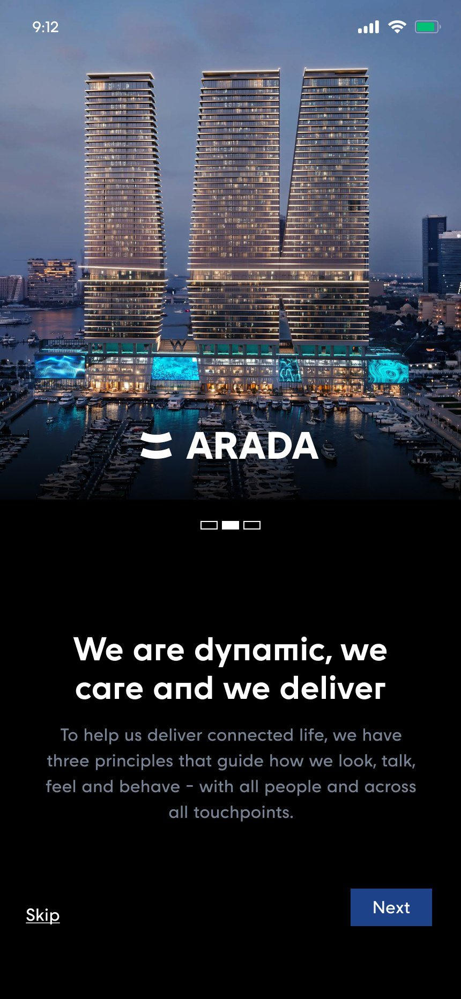
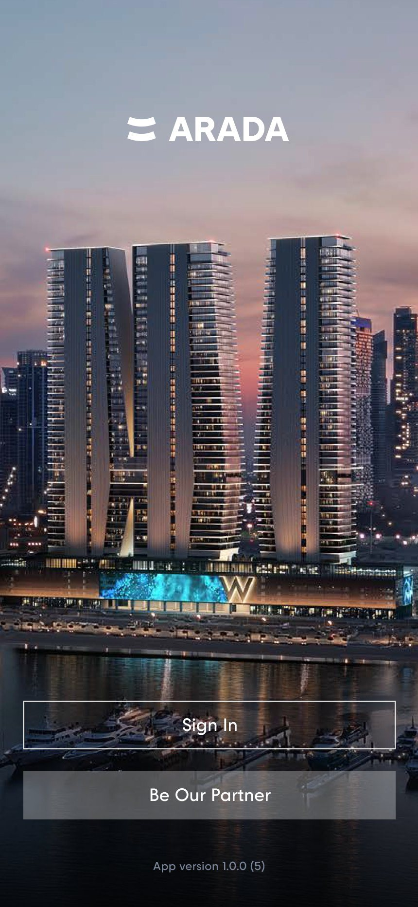
The entry screen labels the second action “Be Our Partner” instead of “Sign Up”. Small copy, doing positioning work. Applying to sell for a developer is a business proposal, and account creation is the wrong frame to put around it.
The problem
Paperwork, an email thread, and silence
The process this app replaces had three failure modes, and they compounded.
The paperwork was physical. Trade licence, ORN certificate, visas, bank letter, and the agency agreement itself. All of it assembled by hand, scanned or couriered, and re-sent whenever one page was wrong or one document had expired.
The channel was email. Which means the state of an application lived in someone's inbox, in a thread nobody owned, with no shared idea of what had been received and what was still missing.
And so it was slow. Nobody was idle. Every handoff was a round trip through a medium with no status, and from the outside a broker who had sent everything looked exactly like a broker who had missed a document. Both were just waiting.
Brokers were frustrated with the paperwork and the mail communication, and the process was delayed.
The brief, in one sentenceThe artefact at the centre of it
Everything the app collects exists to produce one document: a ten-page Real Estate Agency Agreement between Arada and the brokerage, set in parallel English and Arabic columns, signed by both parties.
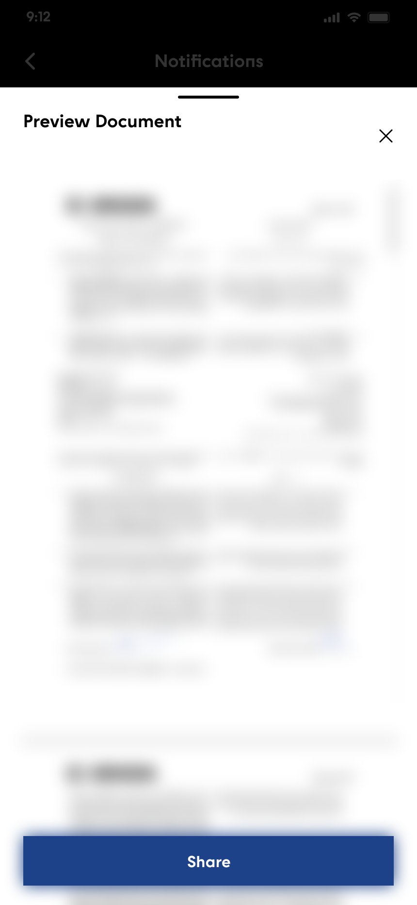
The contract explains the information architecture
The agreement names the brokerage as the Second Party and prints, on its face, the company's licence number, its RERA registration, and its full bank details: beneficiary name, IBAN, SWIFT.
That is the entire onboarding form. The app is assembling a contract. Trade licence, ORN, visa and bank details are collected because the agreement cannot be executed without them.
It also explains a feature name. “Lead Protection Period” is a defined clause in this contract, governing who owns a prospective buyer and for how long. The dashboard's Lead Protection tile puts that contractual right somewhere a broker can actually check it.
Goals
What the app had to achieve
Information architecture
A profile that is really a compliance file
One structural decision shapes the whole product. Profile here is the brokerage's legal standing with Arada, and it behaves accordingly.
In most apps, Profile is a low-traffic corner holding a photo and a password. Here it holds the four things that decide whether the business can trade at all: Company details, Point of contact, Legal documents, Bank details. It also holds the history of what's been booked and who's been invited.
So Profile gets a permanent completion meter, its rows change affordance as they fill, and the whole section changes character once Arada approves it. It's the only screen in the app whose job changes over the account's lifetime.
Around it sits a deliberately small shell: a dashboard, property search, unit status, and notifications. Three or four destinations in total. A broker checking something between meetings shouldn't have to navigate.
Who can do what
A brokerage is a team, so the account is too. The invited roster has three roles:
- Owner holds the legal relationship and signs.
- Admin administers the account and the team.
- Broker sells, and makes up most of the roster.
The distinction matters legally. The person who executes a ten-page agency agreement is not the same person who requests a photoshoot on a Tuesday.
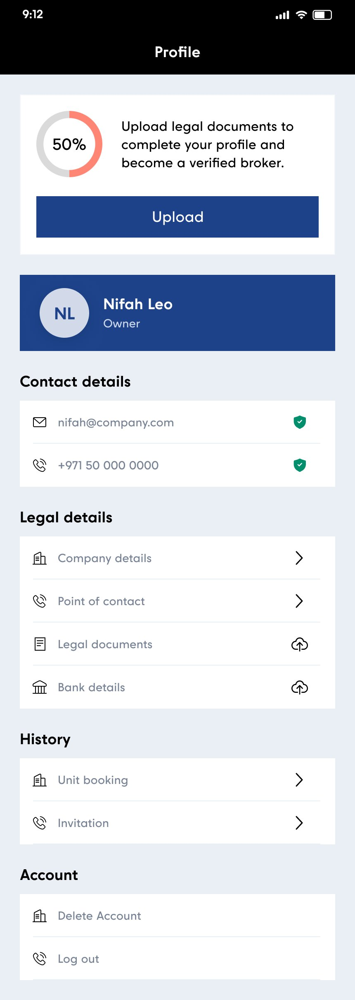
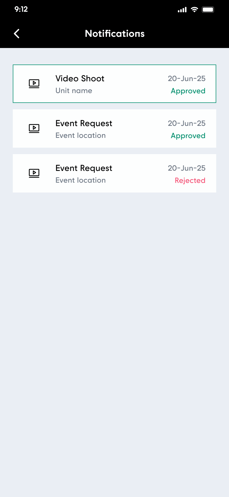
Deep dive · 01. Identity
Getting a regulated identity in through a phone camera
The first thing the app has to do is the thing paper was worst at: prove who is applying.
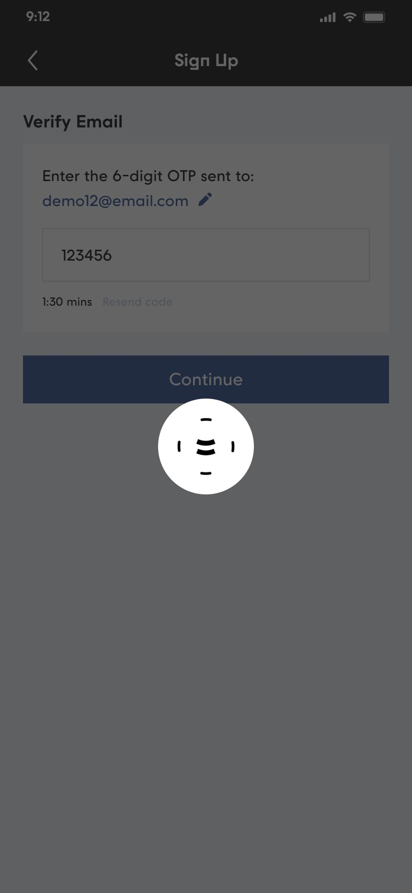
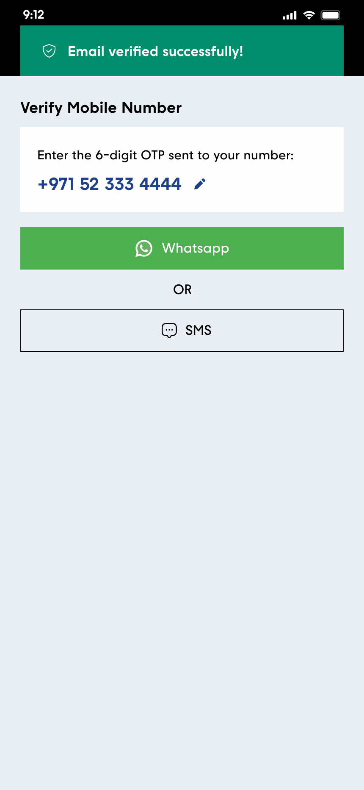
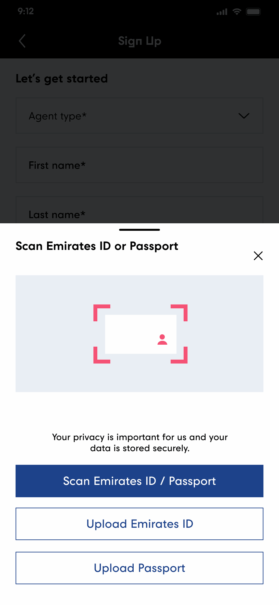
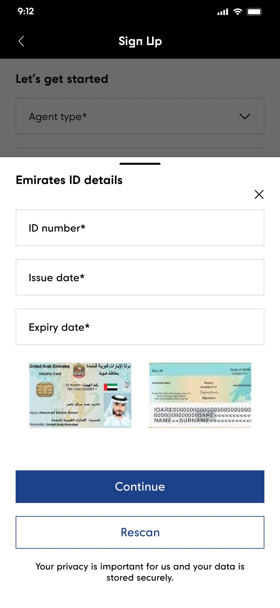
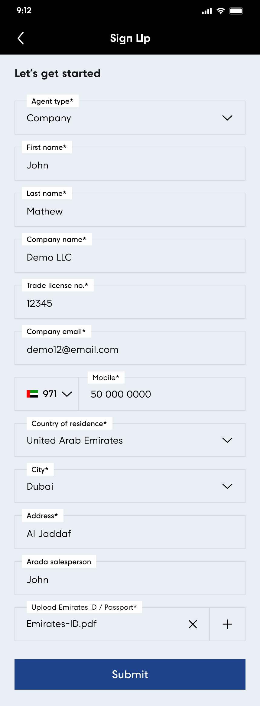
WhatsApp before SMS
The mobile verification step offers the code by WhatsApp first, with SMS as the alternative below an “OR”. In the Gulf that ordering is simply correct. WhatsApp is the default business channel, and a broker whose SIM is roaming or whose second phone holds the work number will get a WhatsApp message when an SMS quietly fails.
Offering the choice at all is the point. A one-time code that doesn't arrive is the single most common way an onboarding funnel dies, and it's the one failure the user can do nothing about.
Scan, then confirm
Capture returns a review sheet with the extracted ID number, issue date and expiry date in editable fields, the captured images shown beneath them, and Rescan given equal billing to Continue.
Optical capture of a worn card under bad light is unreliable, and this data lands in a legal contract. So the design treats extraction as a draft the human ratifies. The passport path is identical in shape, so one mental model covers residents and non-residents alike.
The form, read as a contract schedule
Eleven required fields and one optional. The asymmetry is the interesting part.
| Field | Why it's there |
|---|---|
| Agent type * | Company or individual, which changes what else is asked |
| First / last name * | The natural person signing |
| Company name * | The legal entity named in the agreement |
| Trade licence no. * | Proof the entity may trade |
| Company email * | Contractual notice address |
| Mobile * | Verified channel, +971 pre-selected |
| Country, city, address * | Registered address for the contract |
| Emirates ID / passport * | Identity of the signatory |
| Arada salesperson optional | Attribution if someone referred them in |
The one optional field is the internal one. Everything the contract needs is mandatory; the only thing that can be left blank is the thing Arada would like for its own attribution. That ordering is a small act of respect for the applicant's time.
Both identity sheets show the same line: “Your privacy is important for us and your data is stored securely.” It sits at the moment of the ask, which is the only place a line like that does any work.
Deep dive · 02. Verification
Five states, because "pending" is a place people live
The heart of the product. A brokerage doesn't become a partner in one action. It moves through a sequence, and most of that sequence is spent waiting on someone else.
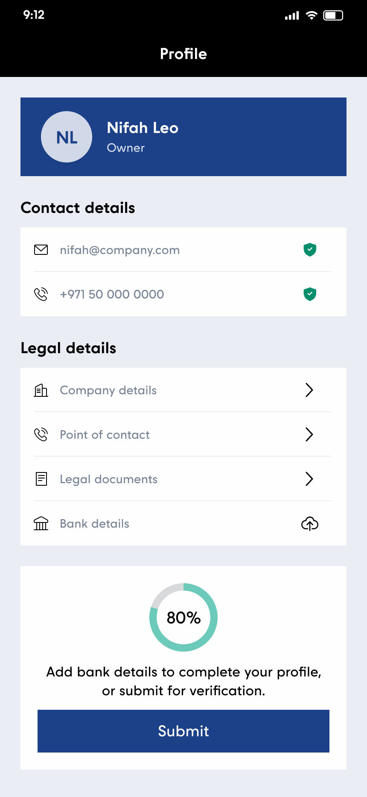
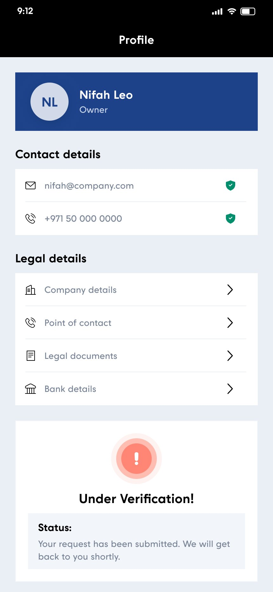
The 80% escape hatch is the real decision
At 80% the copy reads: “Add bank details to complete your profile, or submit for verification.” That “or” is doing a lot of work.
Bank details are the field brokers stall on. They need a bank letter, a finance colleague, an IBAN nobody has to hand. Blocking submission on them would park applications at 80% indefinitely while Arada waits on something that isn't needed until the first commission is paid.
So the flow lets verification start in parallel with the slowest document. Sequence the review around what the business actually needs first, and the funnel stops leaking at its narrowest point.
Two ways to encode the same state
The percentage ring is the obvious signal. The quieter one is the icon at the end of each legal-details row: an upload cloud while something is missing, a chevron once it's filled.
So the broker can read what's outstanding without reading the meter. The list itself shows which rows still want something. Two independent encodings of the same truth, so the screen survives being glanced at.
And the completion card is removed on approval instead of sitting at 100% forever. A permanent “100% complete” badge would be a trophy. The absence of the card is the actual reward.
Deep dive · 03. Documents
Three documents, each with a life of its own
Trade licence, ORN and visa. Every one has a number, an issuing authority, a place of issuance and, crucially, an expiry date.
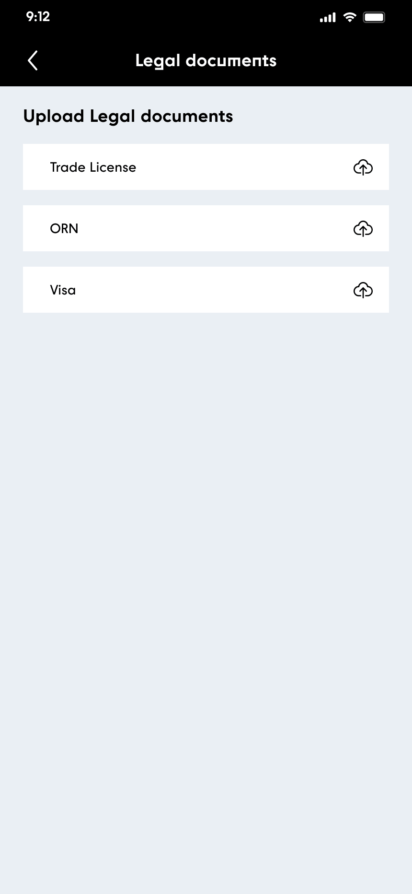
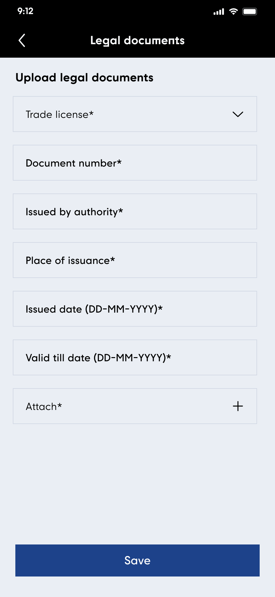
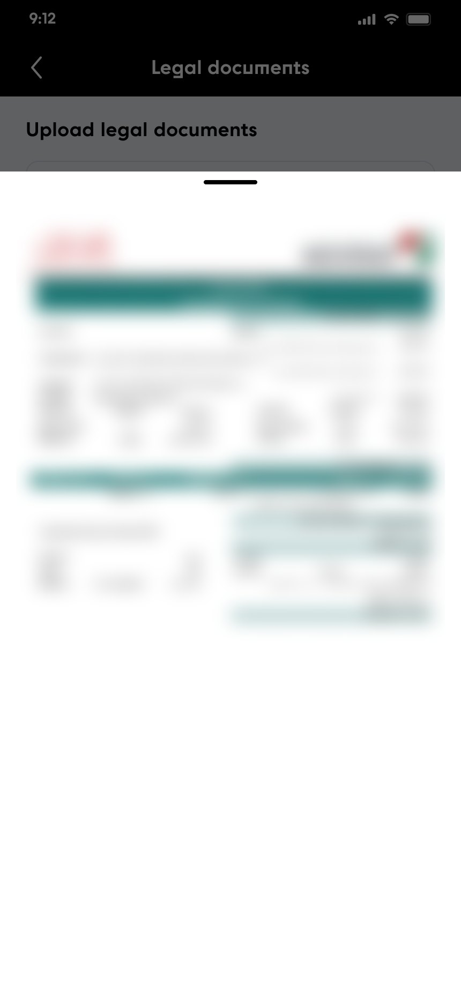
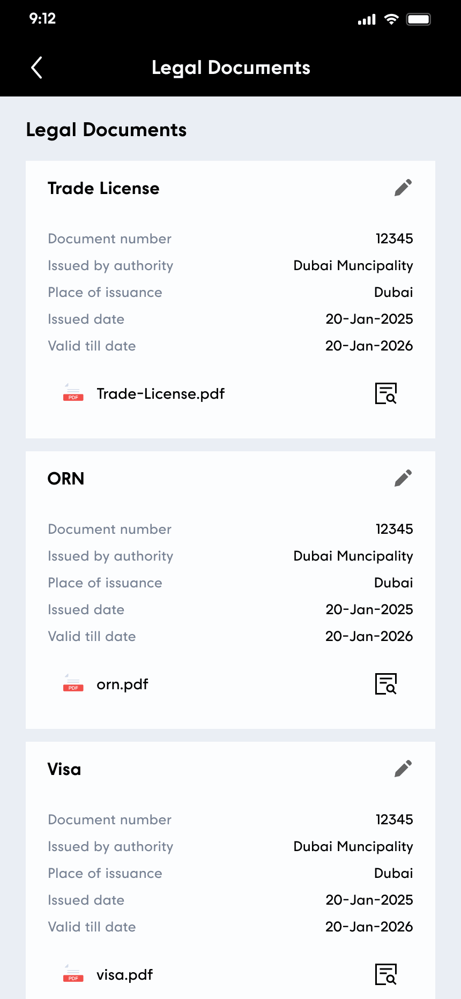
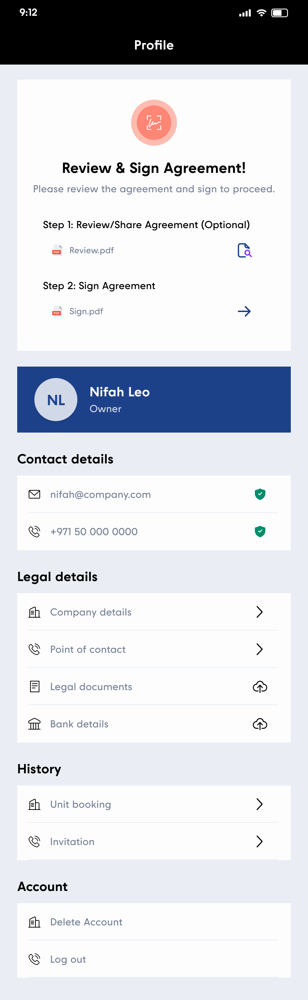
Capturing the expiry date
The obvious design is a file picker. That would have been wrong. A scanned PDF is opaque to the system: nobody can query it, nobody gets warned by it, and an expired trade licence sitting in a folder looks exactly like a valid one.
So each document is captured as structured metadata with the PDF attached to it: number, authority, place, issued date, valid-till date. The read view then shows those dates on the face of the card.
That single decision turns compliance from a filing problem into a data problem. It's what makes it possible to chase a broker before their licence lapses, instead of discovering it at the worst possible moment.
Splitting review from signature
Signing the agreement is presented as two numbered steps, and the first one is marked Optional:
- Step 1: Review / Share Agreement. Open it, or send it to whoever needs to see it first.
- Step 2: Sign Agreement. The commitment, alone, on its own row.
Marking review optional is honest. Plenty of brokers will sign without a second read, and pretending otherwise adds a step people quickly learn to click through. Making share a first-class action acknowledges something true about business contracts: the person with the phone often isn't the person who decides.
Separating the two also means the signature row is never the thing you tapped by accident while trying to read.
Deep dive · 04. Change requests
After approval, an edit becomes a request
Once Arada has verified a legal identity, the broker can no longer simply change it. This is where the app most directly replaces the email thread.
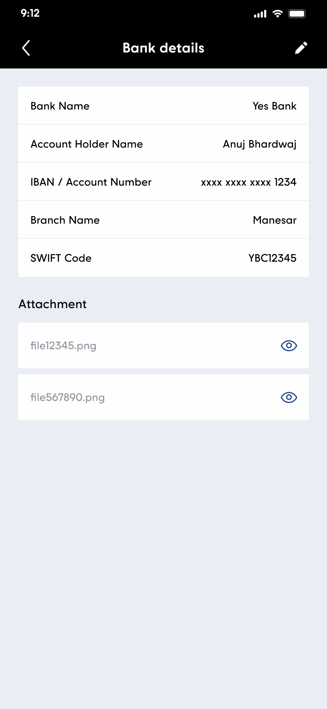
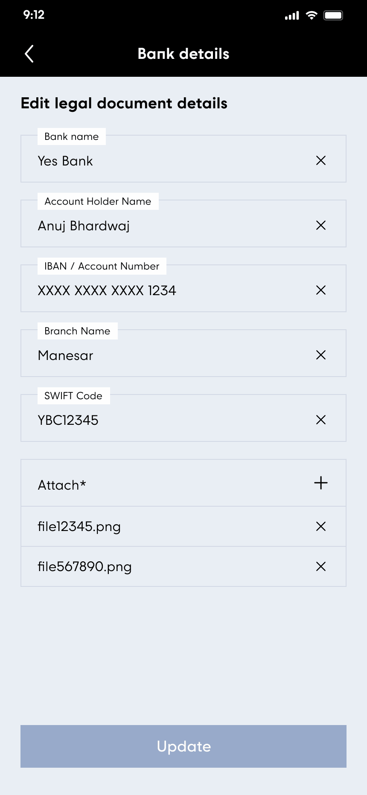
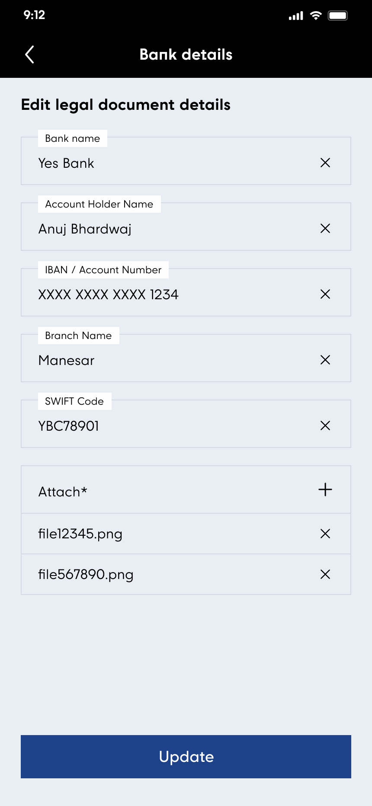
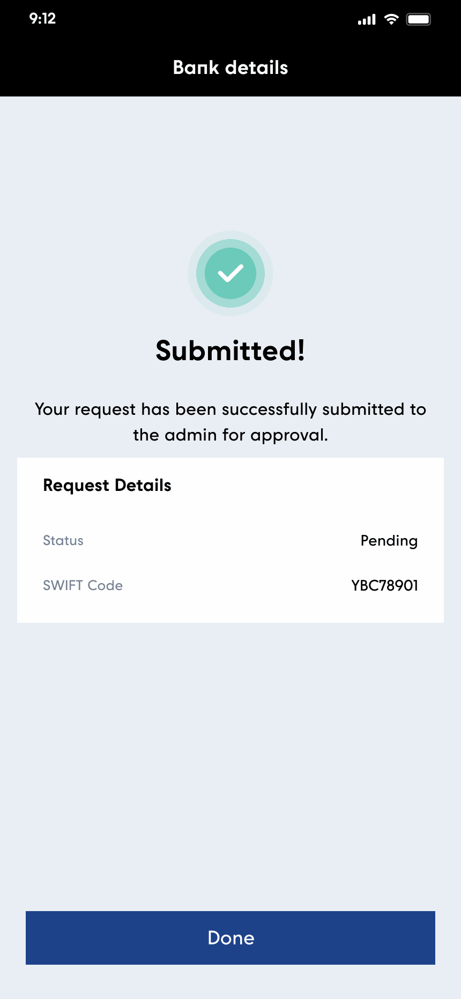
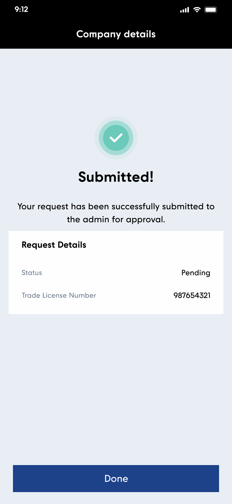
The confirmation is a receipt
Most apps answer a save with “Saved”. This one answers with “Your request has been successfully submitted to the admin for approval” and then a Request Details card showing two things: Status: Pending, and the specific field that's in flight, with its new value.
Echoing back only the changed field is the detail I'd defend hardest. A full summary of the record would bury the one fact the broker needs to remember: the SWIFT code I just changed is pending, and that's why the old one is still showing.
This is the email thread, replaced. Nothing to chase. The state is on the screen.
Three guards on verified data
xxxx xxxx xxxx 1234: enough to confirm it's the right account, not enough to be harvested from a screen in a café.Deep dive · 05. Partner services
What the app does once you're in
Onboarding is the entry fee. The reason a broker opens the app in month six is everything below.
A credential that can't be photographed and reused
Brokers take clients to show apartments. Site security needs to know this person is an approved Arada partner, allowed into this unit, within these hours.
The card is issued in-app with a QR code that regenerates every 60 seconds, and a visible countdown telling the holder so. A screenshot becomes a useless artefact. Passing one around is the most obvious way a static pass gets abused.
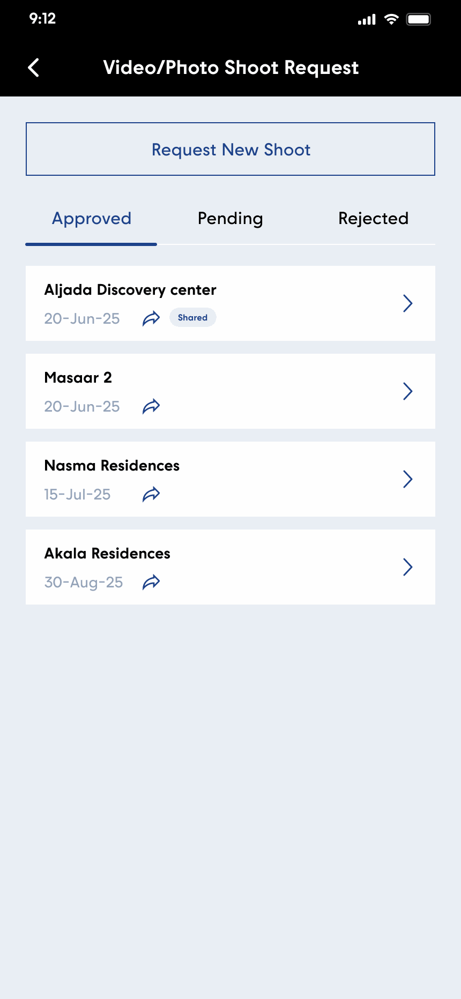
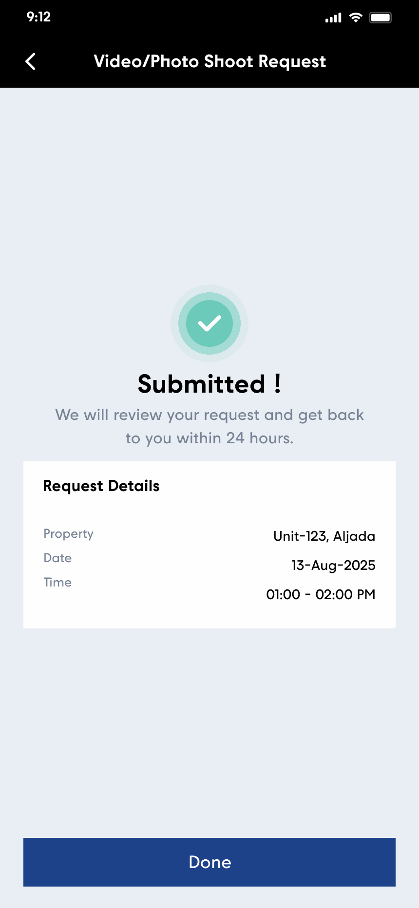
Requests with a turnaround attached
Brokers need content to sell with, and permission to run open-house events. Both used to be email requests, and both are where “the process was delayed” was felt most often.
The shoot confirmation commits to a number: “We will review your request and get back to you within 24 hours.” Putting an SLA in the UI is a design decision with organisational consequences, and it's the most direct available answer to the original complaint.
Approved shoots then become shareable assets. A broker can pass footage to selected colleagues from a searchable, multi-select sheet, and a “Shared” chip marks what's already gone out. The request produces something the brokerage can reuse.
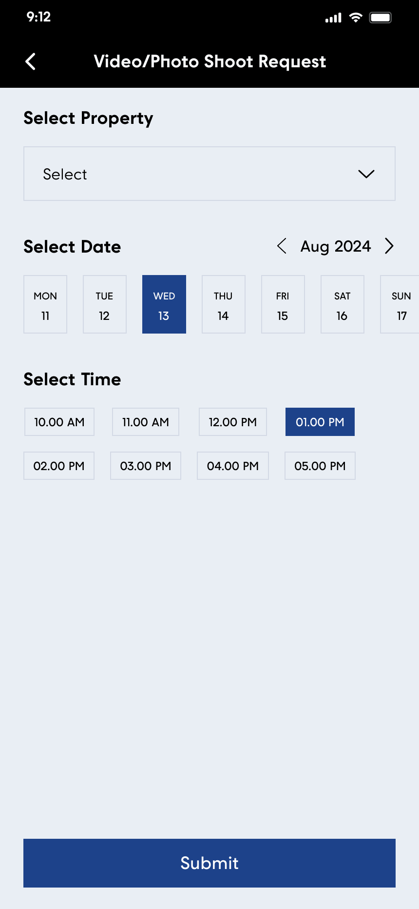
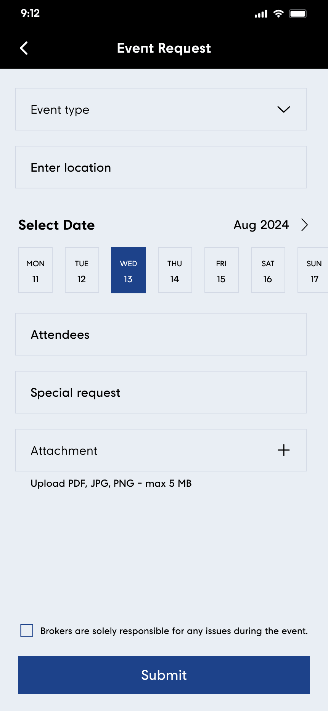
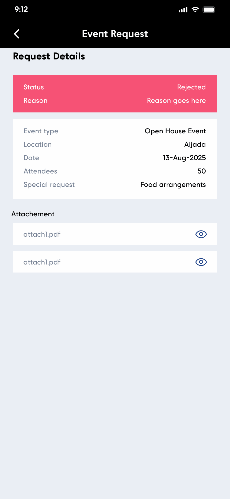
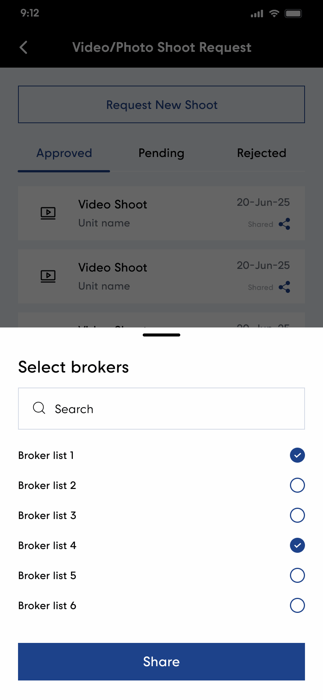
The rejection screen is the one I'd point a hiring manager at. It gives a reason, and it repeats the original request underneath, so a broker reading “rejected” three days later doesn't have to reconstruct what they asked for. Under the old process, a rejection was a reply that said no. Here it's a record that says no, why, and to what.
Deep dive · 06. The team
One brokerage, many brokers
The account belongs to a company, so the app has to let a company populate it. Arada then approves each person who joins.
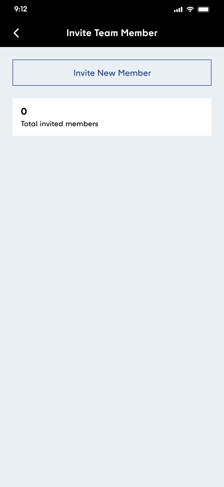
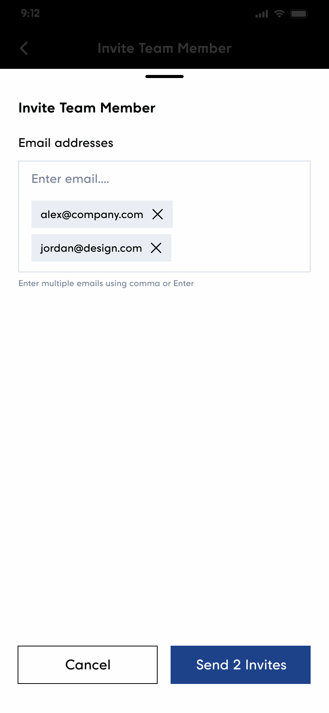
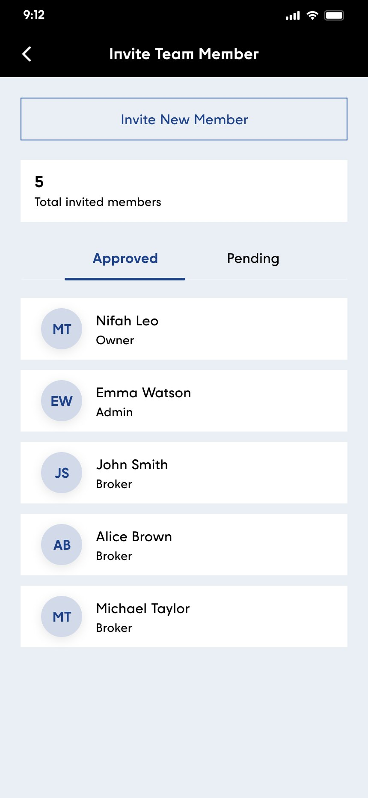
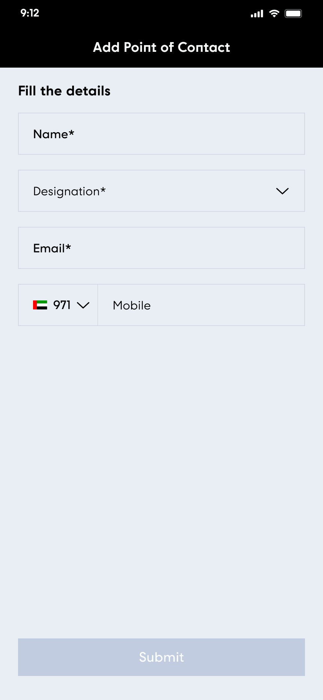
The button counts
Emails are entered as removable chips, and the primary action reads “Send 2 Invites”. The label states the count. Bulk actions are where people misfire, and a button that says how many things it's about to do is cheaper than a confirmation dialog.
The empty state earns its keep too: with nothing invited, the Approved/Pending tabs simply aren't rendered. Tabs over an empty list are furniture pretending to be structure.
Every new person is also an approval
The roster splits into Approved and Pending, which mirrors the profile's own verification model one level down. An invited broker isn't automatically trading. Arada vets people as well as companies.
Same mental model, applied twice. Once a user has learned that submitting produces a pending state that resolves visibly, that lesson transfers to every other queue in the product.
System states
Designed for the car park
A broker uses this between viewings, on a basement signal, on whatever phone they have. Four states cover the ways the app can fail the user, and each one names a way out.
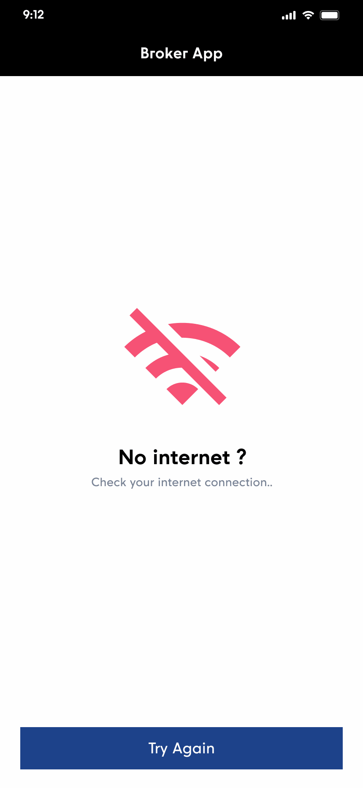
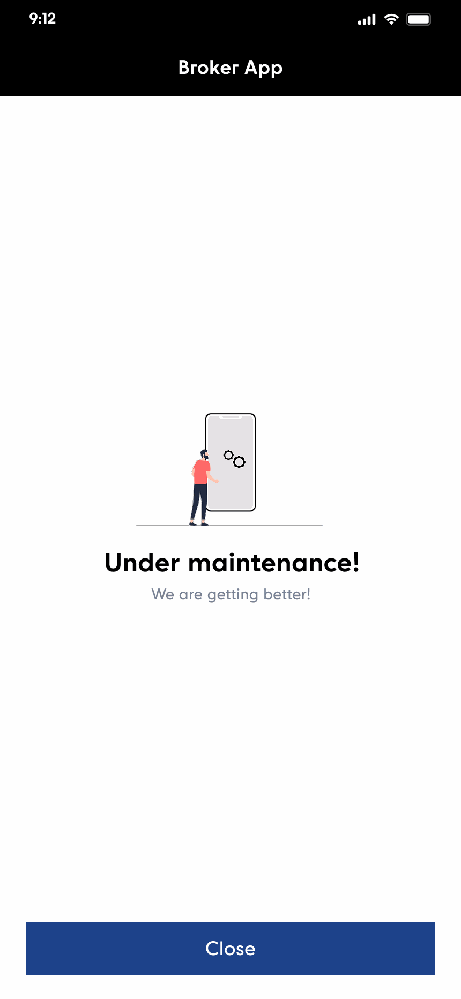
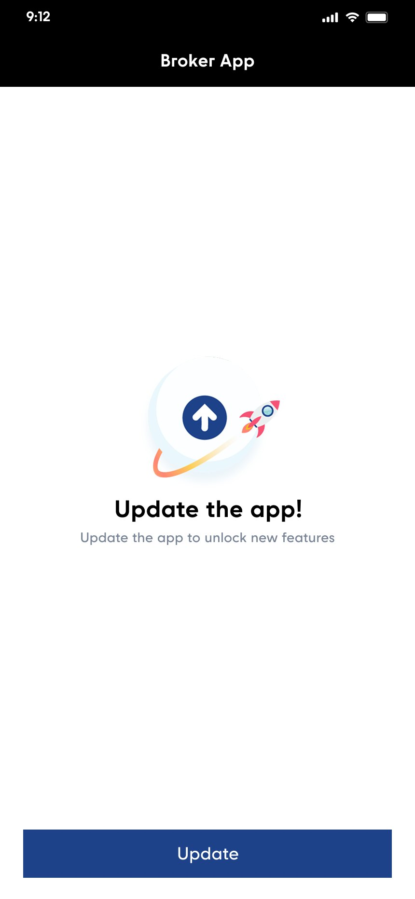
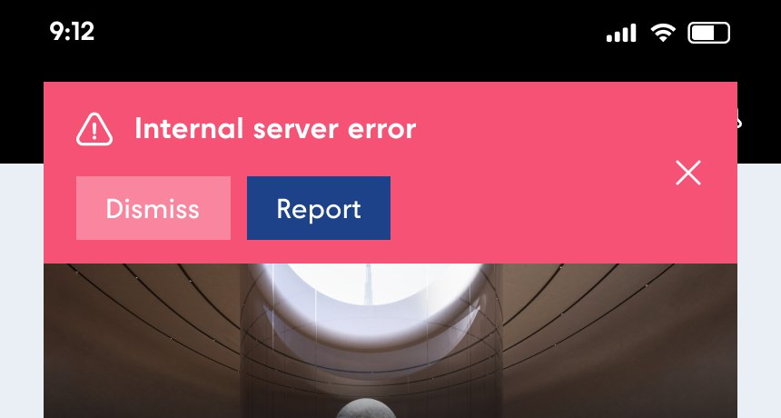
The server error is the interesting one
Offline, maintenance and update all take the full screen, because in each case there is genuinely nothing else the user can do. A server error is different: usually only one call failed, and the rest of the app still works.
So it's an inline banner instead of a takeover. Dismissible, with the content still live underneath. And it offers Report next to Dismiss, which turns a dead end into a signal the team can act on.
Biometrics, after approval
Settings appears only once the profile is approved, and it holds two things: a biometric login toggle and Delete Account, styled destructively and placed well away from everything else.
Biometrics matter more here than in a consumer app. This account can execute a legal agreement and view banking details, and it's used in the field on an unlocked phone that gets handed around.
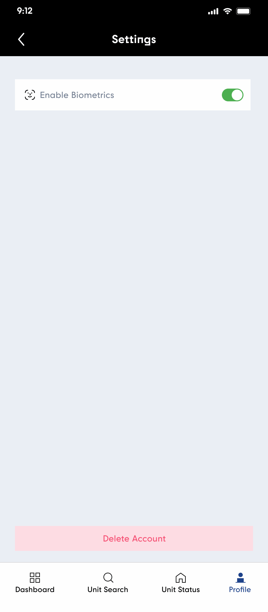
Challenges
Where the design had to work harder
Six problems that layout alone couldn't solve.
Outcomes
How the design answers the original problem
Each goal maps to a specific mechanism in the shipped product. No general claims about usability.
The paper pack becomes structured data
Identity captured by camera and ratified by the applicant; three licences captured as metadata with the file attached instead of as opaque scans; bank details captured once and masked thereafter. Nothing in the onboarding path requires a printer, a courier or a scanner.
Progress is always on screen
A percentage ring with five distinct states, backed by a second encoding in the row icons, so the broker can tell what's outstanding at a glance and what's out of their hands. “Where is my application?” has a visual answer that doesn't require asking anyone.
Submissions come back with a state
Every request resolves into a visible status: Pending, Approved, In Progress or Rejected. That covers profile submissions, legal changes, shoots, events and team invites. Rejections give a reason and echo the original request. The shoot flow commits to a 24-hour turnaround in the UI itself.
Approved identity can't drift
Post-approval edits become approval requests; the legal entity name is locked outright; the Update action refuses to fire on an unchanged form. The record Arada verified stays the record Arada verified until Arada says otherwise.
There's a reason to open it in month six
Creative assets, unit status, lead protection, photo and video shoots, open-house events, a rotating access credential, and a team roster the brokerage manages itself. The onboarding flow is the door; these are the rooms.
Failure has designed exits
Offline, maintenance and forced-update take the screen and name one action each. A server error stays inline and dismissible with a Report path, because one failed call shouldn't cost the user the session. Biometric login protects an account that can sign a contract.
On metrics: I'm not going to attach numbers to this. Post-launch analytics on onboarding completion and approval turnaround sit with Arada's product and sales teams, and I'd rather describe what the design does than quote a figure I can't stand behind. The verifiable scope is above: 92 screens, 12 flows, five verification states, a ten-page bilingual agreement replaced.
Where this goes next
Arabic, properly
The contract at the centre of this product is bilingual. The interface around it is English-only. That gap is defensible for a first release, since UAE brokerage business runs largely in English, but it's the most obvious next investment. Right-to-left is materially cheaper to design for than to retrofit into forms, date strips and masked numeric fields.
Doing something with the expiry dates
Capturing valid-till dates as structured data was the enabling decision. Acting on them is the payoff still on the table. A licence expiring in thirty days should show up as a notification and a profile prompt, well before anyone goes looking for the reason a commission is blocked. The data model already supports it.
Screens
The full set
Every screen referenced above, plus the states that didn't get their own section. Tap any to open it full size.
Next case study
my Arada — Customer Portal
The other side of the same business: a self-service portal where off-plan owners track a three-year payment journey, retrieve documents and raise requests.